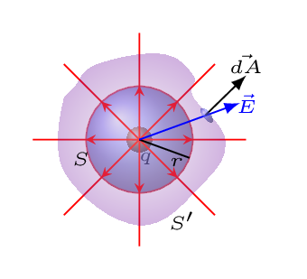

Suppose a charge \(q\) is enclosed by the two closed surfaces \(S\) and \(S'\) then number of lines crossing the surface \(S\) = number of lines crossing the surface \(S'.\) But, the number of lines per unit area through a surface perpendicular to the lines is proportional to the strength of the electric field at a given region, i.e., line density is proportional to the electric field, \(E(r)\text{.}\)

where, line density = \(= \frac{\text{No. of lines}}{Area_{\bot}}\)
or, No. of lines = line density. \(Area_{\bot}\)
where K is a proportionality constant. Hence,
\begin{equation}
\Phi_{s}= K.E(r). 4\pi r^{2} \tag{1.4.2}
\end{equation}
and for surface S’, the flux
\begin{equation}
\Phi_{s'} = \mathop{\vcenter{\large\unicode{x222F}\,}}\limits_{s'}\vec{E}\cdot\vec{\,dA} \tag{1.4.3}
\end{equation}
\begin{equation*}
K.E(r).4\pi\, r^{2} = \mathop{\vcenter{\large\unicode{x222F}\,}}\limits_{s'}\vec{E}\cdot\vec{\,dA}
\end{equation*}
\begin{equation*}
\text{or,}\quad K\left(\frac{q}{4\pi\epsilon_{o}r^{2}}\right).4\pi \,r^{2} \mathop{\vcenter{\large\unicode{x222F}\,}}\limits_{s'}\vec{E}\cdot\vec{\,dA}
\end{equation*}
In SI unit, set constant, K = 1,
\begin{equation*}
\therefore \quad \frac{q}{\epsilon_{o}}= \mathop{\vcenter{\large\unicode{x222F}\,}}\limits_{surface}\vec{E}\cdot\vec{\,dA} = \Phi_{E}
\end{equation*}
1
all integrals used here are closed surface integrals.